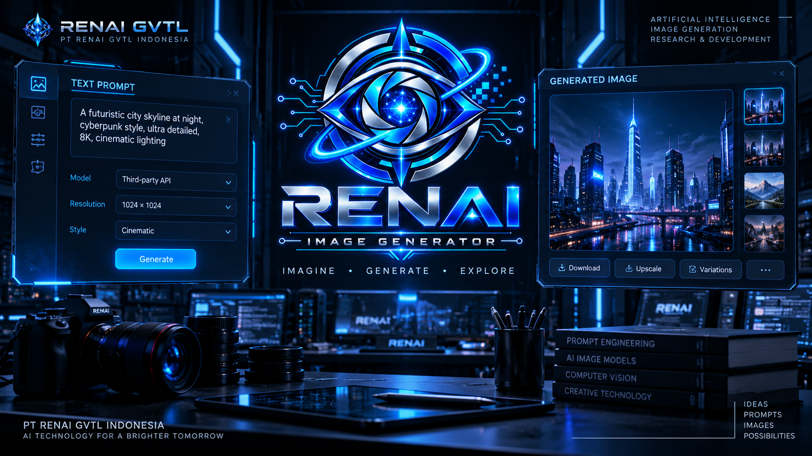

EXP
Experiment
Pengujian terhadap gagasan, teknologi, sistem, API, atau pendekatan tertentu untuk memperoleh bukti dan pembelajaran.
Experimental Process →
 PT RENAI GVTL INDONESIA
•
EXPERIMENT CENTER
•
RESEARCH ARCHIVE
PT RENAI GVTL INDONESIA
•
EXPERIMENT CENTER
•
RESEARCH ARCHIVE
Arsip eksperimen dan pengujian teknologi PT RENAI GVTL Indonesia yang mencatat proses eksplorasi, evaluasi, hasil, kegagalan, dan pembelajaran dalam Research & Development.
Tidak semua eksperimen menghasilkan sistem yang berhasil atau siap digunakan. Hasil yang belum berhasil tetap dicatat sebagai bagian dari proses pembelajaran teknologi.
Experiment Center berfungsi sebagai arsip penelitian dan pengujian teknologi. Setiap eksperimen dapat digunakan untuk memahami apakah sebuah pendekatan, teknologi, API, atau rancangan memiliki kemungkinan untuk dikembangkan lebih lanjut.
Pengujian terhadap gagasan, teknologi, sistem, API, atau pendekatan tertentu untuk memperoleh bukti dan pembelajaran.
Experimental Process →Eksperimen merupakan salah satu tahapan dalam proses R&D yang lebih luas, bersama analisis, evaluasi, dokumentasi, dan iterasi.
R&D Process →Hasil eksperimen digunakan sebagai bahan pembelajaran, bukan semata-mata sebagai indikator keberhasilan produk.
Learn from Results →Eksperimen teknologi dapat mengikuti alur sederhana untuk menjaga agar hasil yang diperoleh tetap dapat dipahami dan didokumentasikan.
Menentukan pertanyaan atau asumsi yang ingin diuji.
Menentukan pendekatan, teknologi, API, data, atau lingkungan pengujian.
Menjalankan eksperimen dan mencatat hasil yang diperoleh.
Membandingkan hasil dengan tujuan atau hipotesis awal.
Mendokumentasikan hasil, kendala, dan pembelajaran.
Menentukan apakah pendekatan akan diulang, diperbaiki, atau dihentikan.
Arsip berikut menunjukkan bagaimana eksperimen digunakan untuk mengeksplorasi kemungkinan teknologi dan memahami keterbatasan pendekatan yang digunakan.

Eksplorasi kembali gagasan RENAI Image Generator dilakukan setelah eksperimen sebelumnya belum menghasilkan sistem yang dapat digunakan. Eksperimen ini kembali menguji kemungkinan pengembangan teknologi generative AI berbasis gambar.
Baca Eksperimen Lengkap →Eksperimen yang telah didokumentasikan hingga saat ini, disusun dari yang terbaru menuju yang lebih awal.
Eksplorasi kembali RENAI Image Generator untuk menguji kemungkinan pengembangan generative AI berbasis gambar setelah pendekatan sebelumnya belum berhasil.
AI • Image Generation • R&D →
Pengujian awal rancangan RENAI Router dilakukan untuk mengeksplorasi konsep routing sebagai bagian dari arsitektur teknologi RENAI.
AI Infrastructure • Router • R&D →
Eksperimen awal menggunakan layanan API pihak ketiga untuk menguji kemungkinan menghasilkan gambar melalui layanan eksternal.
AI • API • Image Experiment →Dalam proses Research & Development, sebuah eksperimen tidak harus menghasilkan produk atau sistem yang berhasil agar memiliki nilai.
Hasil yang tidak sesuai dengan tujuan awal dapat membantu mengidentifikasi keterbatasan pendekatan, kebutuhan perubahan arsitektur, kebutuhan teknologi tambahan, atau alasan mengapa suatu pendekatan tidak dilanjutkan.
A failed experiment is still a documented result.
Eksperimen RENAI dapat berkembang ke berbagai bidang teknologi seiring bertambahnya aktivitas R&D.
Eksplorasi model, AI systems, generative AI, dan teknologi kecerdasan buatan.
Pengujian integrasi API dan layanan eksternal untuk memahami kemungkinan dan batasan implementasi.
Eksperimen teknologi generative AI untuk gambar dan visual.
Eksplorasi routing, infrastructure, metadata, provenance, dan komponen pendukung ekosistem AI.
Pengujian pendekatan software, architecture, interface, dan integration.
Area eksperimen baru dapat ditambahkan seiring berkembangnya Research & Development RENAI GVTL.
Struktur ini menjaga agar perjalanan pengembangan RENAI tidak tercampur antara aktivitas, eksperimen, dan dokumentasi teknis.
Mencatat apa yang dikerjakan dan perkembangan aktivitas perusahaan.
Activity Archive →Mencatat apa yang diuji, bagaimana pengujiannya, dan apa yang dipelajari.
Current Archive →Mencatat spesifikasi, arsitektur, keputusan teknis, dan referensi pembangunan.
Documentation Archive →Menyampaikan perkembangan yang dipublikasikan sebagai informasi perusahaan.
News Archive →PT RENAI GVTL Indonesia saat ini berada pada Foundation Stage. Eksperimen yang tercatat pada halaman ini merupakan bagian dari proses pembelajaran, eksplorasi, validasi, dan pengembangan teknologi secara bertahap.
Keberadaan sebuah eksperimen di arsip tidak berarti teknologi tersebut telah menjadi produk publik, telah mencapai production readiness, atau tersedia untuk penggunaan umum.
Status, hasil, dan ruang lingkup setiap eksperimen harus dibaca berdasarkan dokumentasi eksperimen masing-masing.
Experiment Center menjadi bagian dari perjalanan Research & Development PT RENAI GVTL Indonesia dalam membangun teknologi dan ekosistem RENAI GVTL.